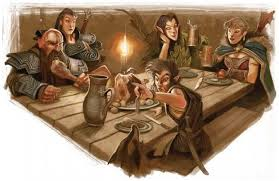

← Volver al inicio
📖 Crónicas del Bosque
Bienvenido a las Crónicas del Bosque, donde se recopilan los eventos, noticias y aventuras más importantes del reino. Un registro vivo de la historia en construcción.
Tablón de Anuncios: Salamanca
📅 Eventos de la Semana
| Día |
Evento |
Categoría |
| Lunes |
Iniciación al Dungeon |
D&D 5e |
| Martes |
Torneo Commander |
Magic |
| Miércoles |
One-Shot: "El Robo del Siglo" |
D&D 5e |
| Jueves |
Eurogames & Chill |
Juegos de Mesa |
| Viernes |
Friday Night Draft |
Magic |
| Sábado |
Campaña Épica (Nivel 12+) |
D&D Pro |
| Domingo |
Taller de Pintura |
Hobby |
El Mercado de Tomos inaugura nueva sección
Se ha abierto al público la famosa Bóveda de los Secretos, donde se guardan los textos más antiguos del reino. Ya podéis visitar nuestro nuevo rincón dedicado a los grandes clásicos de la fantasía: "El Silmarilion", "El Hobbit" y toda la trilogía del Señor de los Anillos disponible en ediciones especiales ¡¡con mapas!!
¡CORRED INSENSATOS!
Publicado hace 5 días
Torneo de habilidades de los Aventureros
Cada mes se celebra un torneo donde los guerreros, magos y pícaros más hábiles del reino compiten por gloria y recompensas.
Las partidas de One-Shot más épicas jamás conocidas,
¡Retos únicos para aventureros veteranos y novatos!

Próximo torneo: 15 de febrero